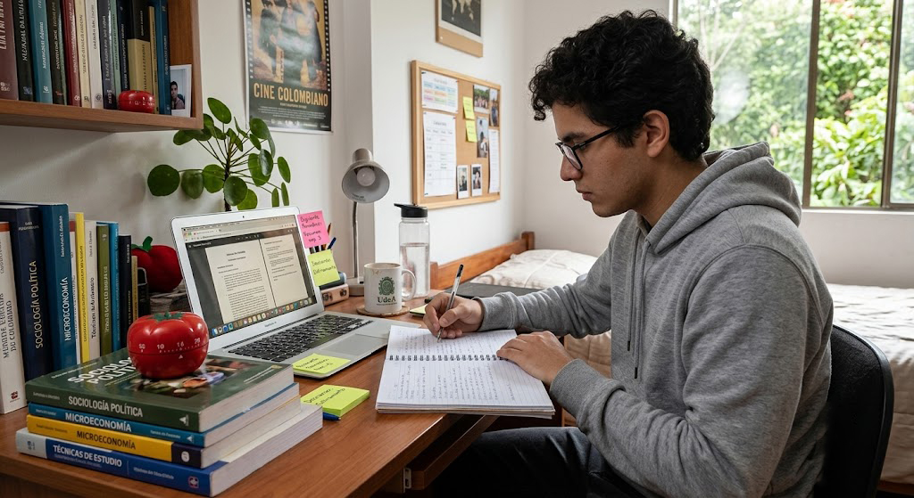

01
01Cómo dejar de procrastinar
Entiende por qué pospones lo importante y descubre estrategias concretas para empezar.
Leer artículo ↗
BLOG / ENFOCA-T
Contenido práctico para comprender la procrastinación, mejorar la concentración y construir hábitos que puedas mantener.
06 artículos / 202601Entiende por qué pospones lo importante y descubre estrategias concretas para empezar.
Leer artículo ↗
Divide tu tiempo de estudio en bloques que hagan más fácil mantener el enfoque.
Leer artículo →Pequeñas acciones diarias que pueden transformar tu rendimiento a largo plazo.
Leer artículo →Explora la relación entre descanso, memoria, concentración y aprendizaje.
Leer artículo →Prepara un entorno que proteja tu atención cuando necesitas estudiar.
Leer artículo →Ordena tu entorno para reducir fricción y facilitar la concentración.
Leer artículo →No encontramos artículos con esa búsqueda.